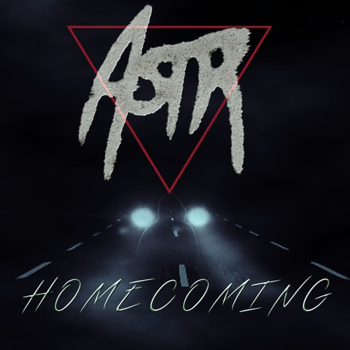

ASTR
ASTR is a duo that lives, works and writes music in New York City. After meeting three years ago in a Manhattan yoga class, they discovered they shared a musical and artistic sensibility informed by cinema noire, Miami Vice and urban dreamscapes. ASTR was soon born.
Zoe is a New York native and former major label refuge. After a hiatus from music to explore the world via spirituality she met Adam, a recovering vinyl addict with a penchant for 60's / 70's cinema scores, Disco, and the fingers for anything with keys (vintage synths, guitar and bass).